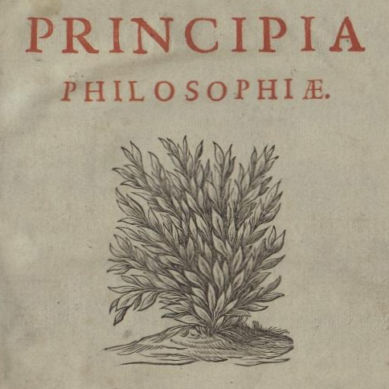

Descartes’ Principles
Fri., Feb. 8
In this class, we finish up on the Sixth Meditation (“The existence of material things, and the real distinction between mind and body”), and begin discussing the correspondence with Elisabeth of Bohemia and the Principles of Philosophy (dedicated to Elisabeth). In the correspondence, we see how Descartes attempts to respond to a tough objection about how mind and body could possibly interact. In the excerpts from the Principles, we see something of Descartes’ theory of substance and mode, his theory of distinction, and his theory of the physical universe (e.g., matter, space, vacuums, atoms, motion, human anatomy).
Key Concepts: Cartesian Dualism, Theory of Distinction, Cartesian Physics
Readings:
required
required
required
Powerpoint Slides:
Other Resources:
Early Modern Texts
Stanford Encyclopedia of Philosophy
Internet Encyclopedia of Philosophy